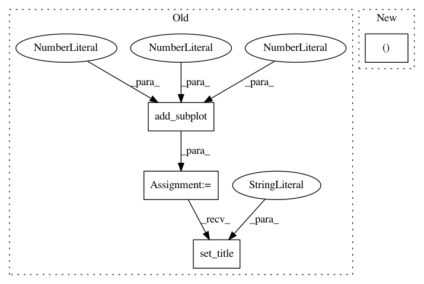

28d073e505c196f281f06219d85a452283621e06,doc/examples/reconst_dsi_metrics.py,,,#,16
Before Change
ax3.set_title("rtop_pdf_norm")
ind=ax3.imshow(rtop_pdf_norm.T,interpolation="nearest",origin="lower")
plt.colorbar(ind)
ax4=fig.add_subplot(2,2,4)
ax4.set_title("rtop_pdf")
ind=ax4.imshow(rtop_pdf.T,interpolation="nearest",origin="lower")
plt.colorbar(ind)
plt.show()
After Change
img, gtab = read_taiwan_ntu_dsi()
data = img.get_data()
affine = img.get_affine()
data = data / (data[..., 0, None]).astype(np.float)
print("data.shape (%d, %d, %d, %d)" % data.shape)
In pattern: SUPERPATTERN
Frequency: 3
Non-data size: 4
Instances
Project Name: nipy/dipy
Commit Name: 28d073e505c196f281f06219d85a452283621e06
Time: 2013-08-24
Author: mauro.zucchelli88@gmail.com
File Name: doc/examples/reconst_dsi_metrics.py
Class Name:
Method Name:
Project Name: milesial/Pytorch-UNet
Commit Name: ff1ac0936c118d129bc8a8014958948d3b3883be
Time: 2019-10-26
Author: milesial@users.noreply.github.com
File Name: utils/data_vis.py
Class Name:
Method Name: plot_img_and_mask
Project Name: inferno-pytorch/inferno
Commit Name: d795f811eb13a20e18aa30c435cef0ad99e830ea
Time: 2018-08-10
Author: thorsten.beier@iwr.uni-heidelberg.de
File Name: examples/plot_unet_tutorial.py
Class Name:
Method Name: